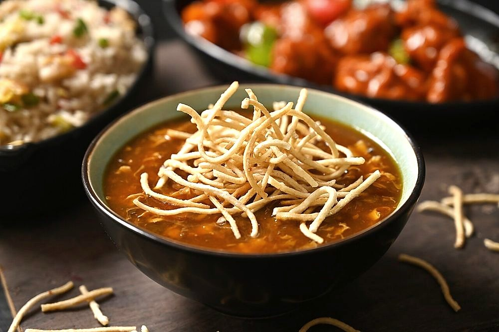

Manchow Soup
dark peppery soup thick with minced vegetables under a raft of fried noodles

Contains: gluten, soy
Ingredients
Quantities for 4.
- 150g, chopped very fine Cabbage
- 1, chopped very fine Carrot
- 8, chopped very fine French Beans
- 1/2, chopped very fine Capsicum
- 100g, chopped very fine Mushroomfor depthoptional
- 12 cloves, finely chopped Garlic
- 1.5 tbsp, finely chopped Ginger
- 3, finely chopped Green Chilli
- 5, whites and greens separated Spring Onion
- 2.5 tbsp Soy Sauce
- 1.5 tbsp Vinegar
- 1.5 tsp, coarsely crushed Black Pepperthe soup should bite
- 4 tbsp Cornflour
- 60g, boiled and fried crisp Noodlesthe crunchy raft on topoptional
- 2 tbsp, plus 200ml for frying the noodles Neutral Oil
- 1 tsp Sugar
- to taste Salt
- 1.4 litres Water
- 2 tbsp, chopped Coriander Leavesoptional
Cookware
stovetop
Checked against the ingredient list for ten allergens: milk, egg, fish, crustaceans, tree nuts, peanuts, sesame, mustard, soy and gluten. Brands vary, so read the label on anything new to you.
Before you start
- Chop every vegetable to the size of a grain of rice. Manchow is defined by that fine mince, not by chunks.
- Boil the noodles, dry them thoroughly on a cloth, then fry them crisp in advance. Wet noodles spit violently in hot oil.
- Crush the peppercorns coarsely just before cooking; ready-ground pepper loses the heat this soup depends on.
Method
- Boil the noodles for 3 minutes, drain, dry completely, then fry in 200ml hot oil for 2 minutes until golden and brittle. Drain and set aside.Fry them in two small handfuls or they mat into a single pancake.
- Heat 2 tbsp oil in a deep pan on a high flame and fry the garlic, ginger and green chilli for 1 minute until the garlic is pale gold and loud.Let the garlic take a little colour here. That toasted note is what makes manchow taste like a restaurant and not a broth.
- Add the spring onion whites and all the minced vegetables and toss hard for 4 minutes.
- Pour in 1.4 litres of water, the soy sauce, vinegar, sugar, the black pepper and 1 tsp salt. Bring to a boil.
- Simmer for 6 minutes, so the vegetables soften but keep some texture.
- Slake the cornflour in 100ml cold water and stir it into the simmering soup. Cook 2 minutes until it turns glossy and just thick enough to hold a spoon upright for a second.Pour the slurry in a thin stream while stirring, or you will fish out lumps.
- Taste and correct. It should be sharp with vinegar, dark with soy and hot with pepper, in that order.
- Stir in the spring onion greens and coriander off the heat.
- Ladle into bowls and pile the fried noodles on top just as you carry it to the table.Noodles added early sink and go soggy. They go on at the last second, every time.
Storage
The soup keeps 3 days refrigerated and thickens as it stands. Loosen with hot water when reheating. Store the fried noodles separately in an airtight jar for up to 4 days.
Nutrition Good estimate
Low protein: 8 g a serving, 12% of the calories
| Per serving565 g | Per 100 g | |
|---|---|---|
| Calories | 276 kcal | 49 kcal |
| Protein | 8.0 g | 1 g |
| Carbohydrate | 45.9 g | 8 g |
| of which sugars | 8.6 g | 2 g |
| Fibre | 7.1 g | 1 g |
| Fat | 8.3 g | 2 g |
| of which saturated | 1.0 g | 0 g |
| of which unsaturated | 6.6 g | 1 g |
Estimated from raw ingredients using USDA FoodData Central.
More like this: Vegan Indian recipes · Vegetarian Indian recipes · Dairy-free Indian recipes · Indian soup recipes · Indo-Chinese recipes
Times, yields, allergens and nutrition are guidance. Use your own judgement on doneness and on storing. More in About.